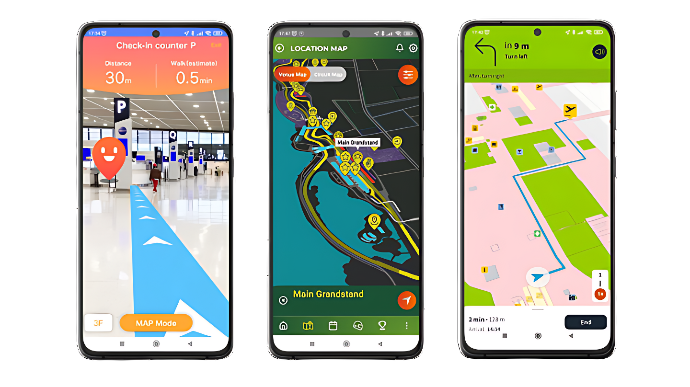

Service 03
Web maps and mapping tools.
We build web maps and tools that help people find places, view building records and plan routes. These can include directories, dashboards or ways for staff to update information.

The problem
A demo map needs a plan for updates.
A map can look finished but still use sample information, with no clear way to change it when a building changes. We plan how the map and its records will be kept up to date.
The work can include a database, user permissions, backups, an update process and instructions for the team that will maintain the map.
Designed for change: the map can be updated or replaced without rebuilding the underlying location records.
Scope
What we build.
Web GIS applications
Search, filtering, layer control, detail panels and map interaction designed around a specific operational task.
Mobile mapping interfaces
Browser-first interfaces for field staff and visitors that work on ordinary phones, including low-bandwidth conditions.
Spatial APIs
Documented endpoints for features, routing, search and reporting, with authentication and rate limits where needed.
PostGIS architecture
Schemas, spatial indexes, constraints, views and migration scripts, versioned and documented.
Dashboards and reporting
Aggregate views of zone activity, asset status or coverage, with export options for internal reporting.
Users and roles
Named accounts, role scopes, audit logging and an admin interface for the client team.
Data integration
Controlled import from CSV, spreadsheets, existing databases or third-party APIs, with validation and error reporting.
Deployment and operations
Containerised deployment, environment configuration, backups and a runbook for the hosting arrangement you choose.
Documentation
Architecture notes, API reference, schema dictionary, administrator guide and handover session.
Architecture
One data path, from source to user.
| Layer | Components | Design decision |
|---|---|---|
| Sources | Plans, CAD, CSV, existing databases, field collection | Every source has an owner, a currency check and an import rule |
| Processing | Validation, transformation, deduplication, identifier matching | Rejected records are reported, never silently dropped |
| Storage | PostgreSQL with PostGIS | Separate schemas for reference, operational and audit data |
| Service | REST API, routing engine, search index | Documented contracts; no business logic locked in the interface |
| Interface | Web app, mobile browser, internal dashboard | Accessible components, keyboard navigation, clear error states |
| Operations | Logging, backups, monitoring, release process | Runbook and named owner before go-live |
Outputs
What a platform engagement delivers.
- A working application in a test environment, reviewed against the scope.
- Versioned database schema and seed data, with migration scripts.
- API documentation and example requests.
- Role and permission configuration for the client's user groups.
- Deployment configuration and an operations runbook.
- Administrator and user documentation, plus a handover session.
We do not hand over an undocumented prototype and call it a platform. If the scope cannot support a maintainable build within budget, we will say so before the contract.
Technology
We choose tools to fit the operating environment, not a preferred stack. Typical components:
- PostgreSQL / PostGIS
- Node.js or Python services
- MapLibre or Leaflet for web maps
- HTML, CSS and JavaScript interfaces
- Docker-based deployment
- OAuth or role-based authentication
Existing client standards take precedence where they are defined.
Questions
Common questions.
Can you build on our existing GIS?
Often. We assess the schema, data quality and access model first. If the existing platform can support the requirement, extending it is usually cheaper than replacing it.
Who hosts the platform?
Either party, depending on your policy. We document the environment variables, backup routine and access requirements so hosting is a deliberate decision, not a default.
Do we get the source code?
That is set in the contract. Most client work includes source-code handover with a licence to maintain and extend. Third-party components keep their own licences.
How is the platform tested?
Against the acceptance criteria in the scope: functional tests, permission tests, data-integrity checks, accessibility checks on the interface and a load check where traffic matters.
Next step
Start with the decision, not the dashboard.
Tell us who will use the map, what they need to find or do and what information you already have. We will suggest a useful first version.